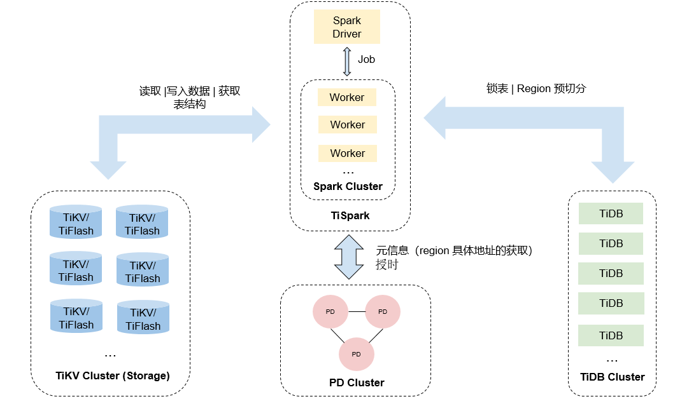
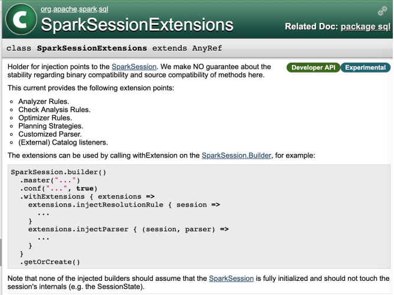
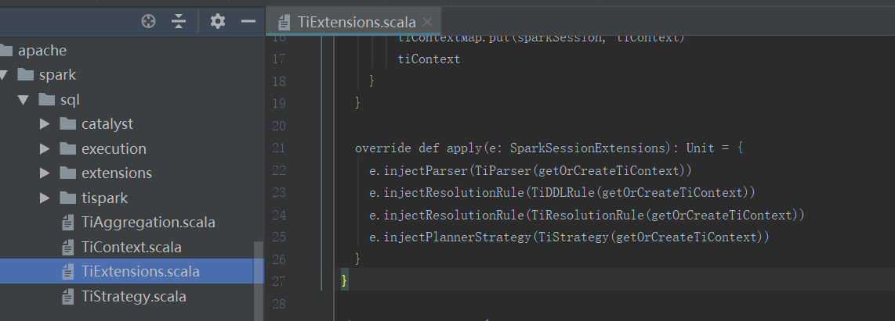
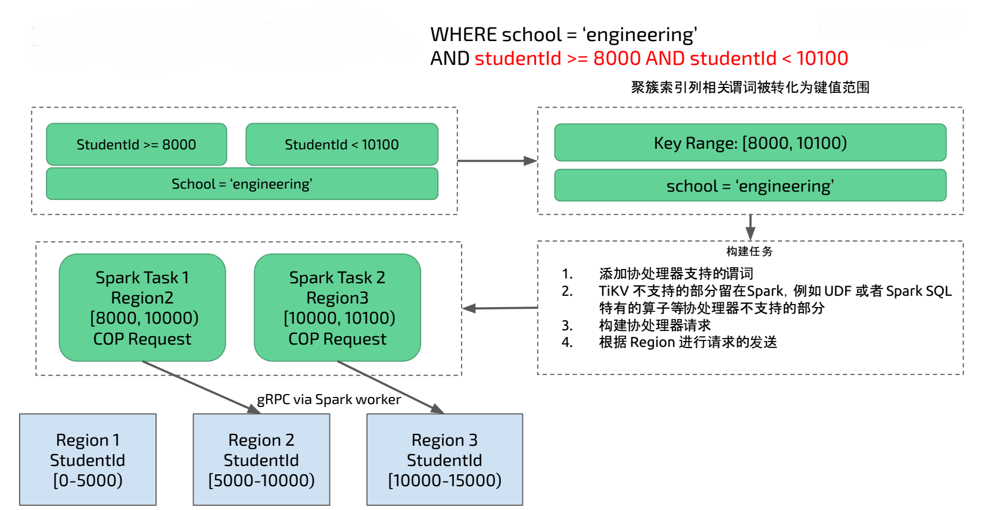
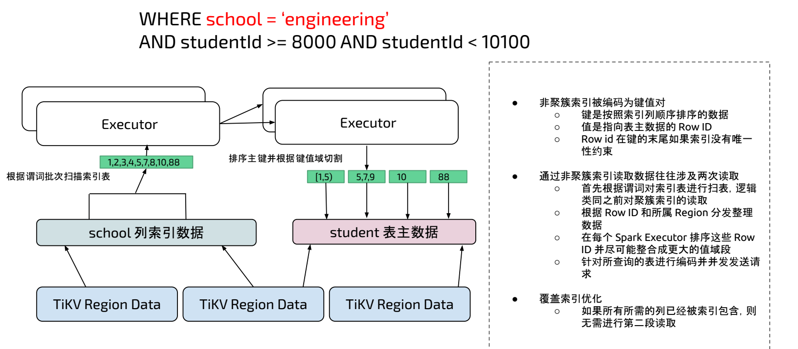
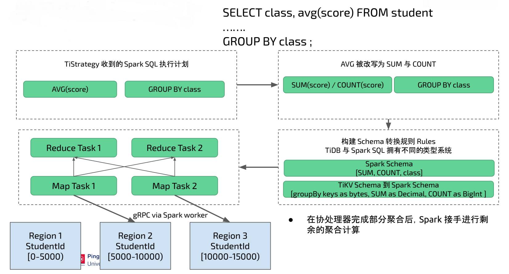

11.1 TiSpark 架构与原理
TiSpark 是 PingCAP 为解决用户复杂 OLAP 需求而推出的产品。它借助 Spark 平台，同时结合 TiKV 以及 TiFlash 分布式行列混合集群的优势，和 TiDB 一起为用户一站式解决 HTAP (Hybrid Transactional/Analytical Processing) 的需求。TiSpark 依赖于 TiKV 集群和 Placement Driver (PD)，也需要你搭建一个 Spark 集群。
本文主要介绍 TiSpark 架构和原理。本文假设你对 Spark 有基本认知。你可以参阅 Apache Spark 官网 了解 Spark 的相关信息。
11.1.1 概述
TiSpark 是将 Spark SQL 直接运行在分布式存储引擎 TiKV 上的 OLAP 解决方案。其架构图如下：

- TiSpark 内置实现 TiKV 和 PD Java Client，让 TiSpark 可以通过 gRPC 与 TiKV 和 PD 通信，从 TiKV / TiFlash 中获取 Key-Value Pair 和表结构用于支持 TiSpark SQL 计算，从 PD 获取数据在 TiKV 上的具体 Region 信息及其副本的物理定位。
- TiSpark 在分布式写入数据时需要通过 TiDB 来进行锁表和 Region 预切分操作，保证数据写入正确性和高效性
- TiSpark Driver 侧：
- 通过 PD CLient 从 PD 中获取 TiDB metadata 信息，并将 TiDB 的 metadata 信息转化 Spark 的支持的 metadata 信息。转化成功之后 TiSpark 可以看到 TiDB的表。
- 劫持和改写 Spark SQL 的执行计划，添加和 TiKV 兼容的物理算子
- 通过 PD 定位数据所在的 Region 和获取当前时间戳
- 将协处理器请求发送至 Region 所在的 TiKV
- 获取时间戳是为了进行快照读取
- 将查询任务按 region 拆分
- 增加并发，加快查询速度
- Spark Executor 侧
- 定制的物理算子从 TiKV 读取数据
- 将 TiKV 数据包解码并转化为为 Spark SQL 的行格式
11.1.2 富 TiKV Java Client
如上架构所示， TiSpark 需要从 TiKV 中获取表结构信息和底层 Key-Value Pair 信息，那么 TiSpark 如何与 TiKV 通信获取这些信息呢？ 这里就需要 TiKV Java Client ，通过 gRPC 与 TiKV Server 通信调用 TiKV API 。
- 解析 TiKV Table Schema 将 TiKV 中的 Schema 信息转化为 Spark SQL 认识的 Schema
- 解析 TiKV 的类型系统
从 TiKV 中获取的数据是 Key-Value Pair ，需要编码和解码模块负责将 Key-Value Pair 转化为 Spark SQL 可以使用的数据。这里的编解码逻辑和 TiDB 编解码逻辑一致。
协处理器支持，可以把谓词，索引，键值域处理计算下推到 TiKV 侧，减少数据传输过程，更能利用 TiKV 的分布式计算能力。在调用协处理的时候也依赖上面类型系统和编码系统，用于构造协处理器调用参数。
- 为了更加精确选择查询计划，提高 SQL 运行效率， TiSpark 中 Java TiKV Client 利用了 TiDB 的统计信息实现了更合理的基于代价的估算。
11.1.3 打通 TiKV 和 TiSpark
通过富 Java TiKV Client 可以完成 TiSpark 与 TiKV 通信，获取 TiKV 的相关数据，如何将 TiKV 的数据注入到 Spark 中完成 Spark 程序分布式计算呢？ 答案是通过修改 Spark Plan 可以完成。Spark 内置了扩展性接口，通过扩展 SparkSessionExtensions 类， Spark 可以实现用户自定义 SQL Plan 、语法支持以及元数据解析等。具体可以参见下图 Spark 官网 API 说明。

TiSpark 配置文件中有一个重要的配置项：
spark.sql.extensions org.apache.spark.sql.TiExtensions
此配置为 TiExtensitions，Spark 在启动的时候会自动加载此类并初始化此类的实例，当此类实例被初始化时，会调用 SparkSessionExtensions 相关的扩展方法将 TiSpark 实现的扩展方法注入到 Spark 中。

原生 Spark SQL 执行计划如下图左边所示，一个 Spark SQL 开始运行，通过 Catalyst 解析器被解析为逻辑执行计划，在优化器中生成物理执行计划，最后通过 DataSource 的 API 获取数据。 TiSpark 修改 Spark Plan 之后的 SQL 执行过程如下图右边所示。将 SQL 优化器和物理执行计划改写为与 TiKV 相关的交互，在物理执行计划中从 TiKV 获取表结构、数据和索引等信息。改写之后 Spark 看到的接口不变，但是底层实现变成了与 TiKV 交互，既保证了与原来 Spark 程序的兼容又完成 TiKV 数据注入。

11.1.4 聚簇索引
上面 Spark SQL 架构比较抽象，具体来看一个例子：
Spark SQL 运行如下 SQL ，其中 student 表是 TiDB 中的表，在 studentID 列上有聚簇索引， 在 school 列上有非聚簇索引。聚簇索引会将索引和数据放在一起。
SELECT class, avg(score) FROM student
WHERE school = ‘engineering’ AND studentId >= 8000 AND studentId < 10100
GROUP BY class ;

在上图中 studentID 是一个聚簇索引， TiKV Region 中会包含聚簇索引的范围，比如上图中 Region 2 的 studentId 范围是 [5000 - 10000) ， Region 3 的 studentID 范围是 [10000 - 15000) 。在 SQL 运行时聚簇索引会转化为对 TiKV 的范围查询，现在要查找范围在 8000 到 10100 的数据 ，TiSpark 会将对应的请求发送到 Region 2 和 Region 3 做范围查找。TiSpark 会在 Spark Executor 端将 TiKV 支持的谓词发送给 TiKV 协处理器计算，并将 TiKV 计算之后的结果进行汇总和再计算。 对于 TiKV 不支持的谓词部分会留在 Spark 中进行计算，从而得到最终 SQL 运行结果。
11.1.5 非聚簇索引处理
非聚簇索引被编码为键值对，键是按照索引列顺序排序的数据，值是指向表主数据的 Row ID 。
通过非聚簇索引读取数据往往涉及两次读取
- 首先根据谓词对索引表进行扫表，逻辑类同之前对聚簇索引的读取。
- 根据 Row ID 和所属 Region 分发整理数据
- 在每个 Spark Executor 排序这些 Row ID 并尽可能整合成更大的值域段
- 针对所查询的表进行编码，同时并发发送请求
例如下图中扫描 school 的非聚簇索引表数据，得到 1,2,3,4,5,7,8,10,88 的 Row ID ，在 Spark Executor 端对这些 Row ID 排序，再根据 Row ID 对 student 主表进行范围扫描，再将 TiKV 主表返回数据在 Spark 中再计算得到最终结果。

11.1.6 聚合处理
TiStrategy 负责改写 TiSpark 的物理执行计划，假设 Spark SQL 中包含 AVG(score) 和 GROUP BY class 。 TiSpark 会将 AVG 改写为 SUM(score) / COUNT(score) ，在改写过程中还需要将 TiSpark 的表达式改写为与 TiDB 兼容的表达式，以保证 TiKV 协处理器同时支持 TiDB 和 TiSpark。 在下图的场景中 group by 返回的类型是 bytes ，SUM 返回类型是 Decimal ，Count 返回类型是 Bigint 。而这些 TiDB 表达式的返回值到 Spark 中无法被直接使用，还需要转化为 Spark 中兼容的类型。在Spark Executor 执行中 Map Task负责发送协处理器并处理 TiKV 协处理器返回的数据， Reduce Task 将 Map Task 的数据进行聚合得到最终结果。

11.1.7 分布式大数据写入
最初 TiSpark 只能通过 TiDB JDBC 的方式将数据写入到 TiDB ，这存在可扩展性问题。通过 TiSpark 直接写入 TiKV 则可以解决此问题。在 Spark 中数据一般是以 DataFrame 的形式存在， TiSpark 写入过程中可以将 DataFrame 的数据转化为 TiKV 认识的格式，并通过 TiKV Java Client 将数据写入 TiKV。
- 根据 DataFrame 中数据进行 Region 预切分和分配
- TiKV 数据写入需要支持分布式事务， TiKV 采用 Percolator 协议进行事务操作，操作过程如下：
- 在 Spark Driver 端开始写数据时申请 TiKV 中主数据预写，对此条数据加锁。
- 在 Spark Executor 端将 DataFrame 转化为 TiKV 的 Key-Value Pair 格式，并调用 gRPC 进行次数据预写，将 DataFrame 数据存入到 TiKV ， 此过程如果存在写入冲突可以选择报错或者覆盖写入。
- 在 Spark Driver 端等待 Spark Executor 预写成功，再将主数据提交。 Percolator 提交成功取决于主数据提交状态。
- 在 Spark Excutor 端提交次数据。到此完成了所有两阶段事务提交。
11.1.8 总结
TiSpark 实现了富 TiKV Java Client ，并通过 Spark 内置扩展接口改写 Spark Plan ，将 TiKV 的表结构和数据集成到 Spark 中。 非常巧妙的将 TiKV 体系和现有大数据体系融合起来。再通过分析 TiSpark 对聚簇和非聚簇索引的处理，以及协处理器在其中的作用，加深了对 TiSpark 与 TiKV 交互的理解。 最后分析 TiSpark 分布式写入 TiKV ，完成了 TiSpark 对 TiKV 读和写的总体理解。